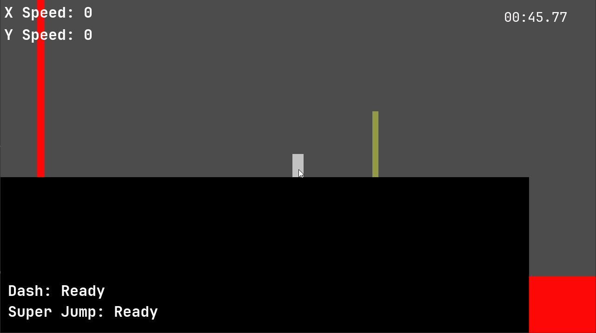

Dev Log 6: Improvements, Logging, POST Requests in Godot, and Public Release!
2/13/23
In this devlog: a host of changes based on feedback from in-person testing, rewriting the capstone's logging framework in GDSCript, POST request struggles, and feedback from public release.
Movement Changes
Addressing the feedback from last week's testers, double jumping while in the air was switched to be the same button as regularly jumping from the ground (SPACE). Instead of setting W to also do a jump, W now results in a super jump. This was implemented to help combat the lack of vertical mobility in the game.
RayCast2D nodes on the Player node and checked those
for collision instead of using the player's kinematic body's is_on_wall().
An advantage of this method of checkout for if the player is on a wall or not is that
it fixes the collision detection issue and solves for players wanting to hold away
from the wall when trying to walljump. Since air control is minimal in the game,
the player will still be close enough to the wall for a bit, even if they press the
opposite direction movement key.
If you notice the ray under the player character, this is an experimental change. Again
in last week's devlog, we covered how players felt having essentially the same actions
(jump and double jump) on different keys was very confusing. But we were limited in
changing it because if we did, then it would be really easy for players to use up their
double jumps without knowing. The ray under the player checks for the ground collisions
only in the case that the player might want to bunny hop by pressing jump. Unlike the
wall collision detection, we still use is_on_floor() from Godot's
KinematicBody2D node. This allows a small margin for the player to still
bunny hop even when they press the space bar too early.
QOL Changes
These smaller QOL changes were also based on feedback from last week. First, we added sound effects to common actions. Jumping, dashing, super jumping, bunny hopping, running, dying, leaving the start zone, entering the end zone, and hitting a checkpoint now all have sounds associated with them. While the sounds aren't completely cohesive, they do add a degree of feedback to the player's actions, which is nice.
To address players not knowing when abilities were recharged, we implemented a stopgap fix adding the time left to the ability display rather than a binary "yes/no".
Finally, since the game deals with moving fast and moving fast requires a big space to move around in, a detached camera mode as been implemented to help players scout ahead.
Public Release and Logging
We released our build to the public on Itch.io, and implemented automated logging and data collection. For some analysis and reflection on how that has gone, click here to see our presentation on it.
POST Requests in Godot
Previous quarters of the Games Capstone here at the UW used a remote logging script originally for HaxeFlixel that sends player data to a database server via HTTP POST requests. It logs when levels start or end, and associates players with sessions and unique IDs. In order to use this logging script, we first ported it to GDSCript and ironed out any issues. I tried to keep it as close as a 1:1 rewrite as possible, since we didn't know the exact format of data expected by the database server.
Trying to get the loggin script to work turned out to be very time consuming, and illustrated some of the key differences between the original scripts, its many rewrites for other engines, and our rewrite. Specifically, it had previously been converted to C# for Unity, and a previous quarter's team had rewritten it in JavaScript since they were targeting Web release.
The main problem that took so long to figure out was just the database server responding with
{"tstatus":"f","tload":"4"}. I had no clue what this could possibly mean and had
no access to information about how the database server was running. This didn't give any
indication of what was actually wrong with the way I was making requests in the GDSCript version
of the logger. As it turns out, the fix was fairly simple - the server expects application/x-www-form-urlencoded
body data in POST requests. I was already making POST requests, but hadn't realised that
url-encoding the body data was necessary. This fixed the issue, but was actually really awkward to do in GDSCript.
Let's get a bit more technical to explore why. In order to simplify the process of making
HTTP requests in Godot, an HTTPRequest node/class is present in Godot. It wraps
a HTTPClient node to actually perform the requests. So while it is possible to
add arbitrary headers to specify that a POST request should be "Content-Type: application/x-www-form-urlencoded",
there's actually no way to url-encode a request's parameters with HTTPRequest.
Instead, my code ended up looking like this:
query_string_from_dict is only available on instances of
HTTPClient in Godot 3.5.2rc2. This is a really awkward and obtuse way of doing stuff,
and highlights the differences between game engines. Unity's default POST request
uses application/x-www-form-urlencoded and converts dictionaries to the
right query string format under the hood. The HaxeFlixel and JavaScript versions also
just make functions calls with what appear to be dictionaries, and have the query string
conversion automatically performed. Since this wasn't visible in any of the other
versions of the logging script, that's probably why it took so long to figure out.
Challenges
Our struggles with the logging script are not yet finished though. The recommended instructions
for using it state that "Wait until a response is received before continuing" for our requests
to initialize a user session and get a user session ID back from the server. But how can this
be achieved in Godot? I'm still struggling with answering this because there doesn't seem to
be a way to block all execution but still allow the HTTPRequest we actually want to wait for
to make progress. OS.delay_msec() blocks all execution so the HTTPRequest can't
ever get sent. But not doing that means that once we send the request, even if we yield
to wait for it, control will just transfer to some other node's operations and the game will
start without waiting. We have verified in the logging data that this is indeed a problem -
in one case we receive events without a session ID attached and that messes with the quality
of our data.
None of the other resources I can find when Googling need to block the execution of Godot in this manner, where it is critical based on the contract of the API to block and not allow anything else to happen and generate events that get sent to the server until a response is receieved. We might be able to just live with the imperfect data, but if there's anything out there floating around, please point me to it.